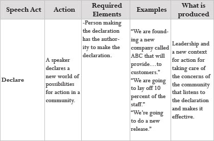
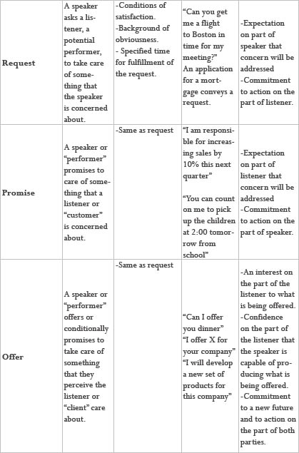

Imagine this scene: You’re taking part in a regular staff meeting. Several staff members complain that during the previous two weeks, work orders were filled out sloppily, which caused delays in providing services to some customers. You spend ten minutes discussing the issue and what might be done about it, and the meeting is adjourned. Nobody was charged with taking care of the problem, and staff members leave with a slightly unsettled feeling. A week later, the same issue is brought up in the staff meeting, and the situation from last time is replayed.
We’re all familiar with similar situations in our work, situations where we don’t work effectively together, situations where the present seems to keep repeating itself and it doesn’t feel as if we’re moving forward. It’s not clear who will address what, so people begin to blame one another. Then we find ourselves focused on pointing fingers rather than on producing value for the business and for customers.
Breakdowns in communication between people have always been a frequent issue in the workplace as well as in life. Whether you’re a company trying to ensure that your teams, departments, and business units are working with and not against each other, or you’re an entrepreneur or self-employed contractor who often feels that his or her needs aren’t understood, breakdowns in coordination and communication impede effective work from happening. Worse, people begin to feel as if their work is meaningless, that they’re not producing value for others or receiving value from doing the work for themselves.
In this chapter, we’ll look at how we create our work, where we produce breakdowns, and how we make action happen. We propose that we make things happen in the commitments we make to each other, and that we make these commitments in conversations. To understand how we do this, we must first challenge our common understanding of communication.
Our Common Understanding
We typically think of “communication” as conveying to each other our desires and intentions for the future, and “action” as getting our bodies in motion to accomplish those goals. After all, having conversations is what we do when we’re “just thinking about” action, before we “just do it.”
Our everyday understanding of action and language is strongly influenced by two broad assumptions about how people coordinate with each other to get things done. The first assumption is that people have clear needs and desires, and human language gives us the ability to transfer information about our desires from one person to another. The second assumption is that action consists of the physical movements necessary to satisfy those desires. Together, these assumptions support the interpretation that in conversation, we share information about what we want to have happen in the future, and in action, we use our bodies to carry out those intentions.
This may be an adequate framework for understanding our simplest needs, wants, and most routine transactions. When you buy a soda at a hot dog stand, or a surgeon asks for a scalpel in the operating room, the future is clear and immediate. Language can masquerade as mere transmission of information here, because both the desire and the action that will satisfy it are so narrowly specified. The situation is different, though, when you’re inventing a new product or closing a deal with a client. Your customer may not know exactly what will ideally satisfy him or her. No amount of information will allow you to predict exactly how his or her needs will change in the future. In these situations, you don’t need to predict and manage mere movement, but rather invent and manage a set of ongoing conversations for producing satisfaction for your customers.
People often—perhaps even usually—don’t have clear, specified desires, and language isn’t the transfer of information from one mind to another. People don’t merely use language to communicate their desires about the future; they create the future in language together by making commitments to each other. Conversation, then, is not merely a prelude to action, it is its very essence.
This view has two principal advantages over our more common understanding of language and action. First, it presents us with the possibility of an elegantly simple way to observe and manage how people coordinate their actions. We’ll demonstrate that while people’s needs and intentions are represented in a nearly infinite variety, we can distinguish an inevitable structure for the coordination of action in language that’s composed of only a few basic elements. Secondly, viewing action as coordination in language greatly expands our ability to deal with the future flexibly and creatively. When action is viewed as physical movement, the future must be predicted and planned in advance. Understanding that we create the future in language gives us more room to maneuver and respond to unexpected changes.
The Basic Structure of a Conversation for Action
This perspective—managing conversations rather than information—of human action may seem counterintuitive, but it can dramatically simplify our understanding of action and work. While we can generate an infinite amount of information about people’s desires, we can distinguish just one simple conversational structure—the conversation for action—in which people coordinate their actions. Furthermore, this structure consists of variations on just a few basic moves in language, or what’s referred to as “speech acts.” In making a speech act, you’re not simply conveying information. You’re making a commitment about how you and your listeners will coordinate your actions in the future.
In its simplest form, the conversation for action consists of four separate speech acts:
1. Request or offer,
2. Promise or acceptance,
3. Declaration of completion, and
4. Declaration of satisfaction.
We can observe these distinctions in our own and in other people’s speech. The first two moves involve the exchange of a request and a promise. In making a request, you’re indicating your desire to have something happen in the future. When someone accepts your request and promises to fulfill it, he or she commits himself or herself to making sure that what you asked for eventually actually happens in a way that satisfies you. After the exchange, you have a common orientation toward fulfilling the request that influences how each of you will act in the future.
Let’s look at these speech acts more closely so you can start observing them and build new practices with them, which will enable you to become more effective in your daily work.
Request and Offer
There are two ways of initiating a conversation for action: making a request or an offer.
Making a request of someone sounds like:
“Please meet me at the office half an hour earlier tomorrow morning so that we can get a head start on the performance assessments.”
“I ask that the staff meet once a week from now on.”
“I’m not pleased with the new connection XYZ Electricity Company built for me the other day, and I insist that you send out a service man to take care of it.”
“Everybody is to follow the safety regulations.”
“Pass me the stapler, please”
In speaking, a request can show up in many variations, such as “I ask,” “insist,” “order,” “plead,” “beg,” or “Stand up,” “Help!” “Out!” and so forth. The different tones indicate the relationship we have with each other; the various verbs and expressions belong to the basic distinction of “request.”
When others agree to our requests, we’re changing the future. Let’s look at an example between two different areas of business. When a customer calls an area business unit (ABU) to request electrical service and the customer service representative (CSR) takes the call, she might ask some questions about the customer’s specific needs. They agree on a certain date for the installation of the new service to take place, and the CSR promises the customer that the service men will be out at the mutually agreed-upon time. In this brief conversation, they’re building their future together: the CSR, as a representative for the ABU, made a commitment to provide the electrical service, and the customer made a commitment by accepting the conditions for the delivery of the service. Based on these commitments, the customer as well as the CSR will take certain actions in order to fulfill his/her commitments. The customer will clear his schedule so he’ll be present when the service men arrive to build the service; or he might ask his wife to be available when the service men arrive at their house. The CSR fills out a work order, speaks to the service men about the job, makes sure they’re available and know about the customer’s specific needs, etc.
Fundamental Elements of a Request
The act of requesting requires that all the following elements appear in the listening of the relevant parties:
1. Speaker (specific identity)
2. Hearer (specific identity)
3. Conditions of satisfaction (COS) stated in accordance with the standard practices of a community
4. Background of obviousness sufficient to the request
5. Specified time for fulfillment of the request:
Spoken COS due
Time1 Time2
6. Future action to be performed by the hearer
7. Brings forth something missing: a new possibility
8. Presupposition of hearer’s ability to fulfill
9. Sincerity
10. The speaker and hearer share concerns that make the conditions of satisfaction relevant
Offers
People don’t just respond to requests. We also try to address the concerns of others through offers. Businesses attempt to anticipate their customers’ concerns and design conditions of satisfaction that customers will be interested in purchasing. In this respect, an offer can be interpreted as a conditional promise: a company promises that it will produce some conditions of satisfaction for a customer, given that it receives money in exchange. A conversation for action that starts with an offer in this way has its own slightly different structure. In this case, the first phase is the offer, a conditional promise.
Examples of how to initiate offers include:
“Here’s a user guide for you. It’ll help you to learn about the new software program.”
“We offer you a power efficiency audit of your entire school building, which could cut your electric bill by 20 percent.”
“I offer to cover the office for you this afternoon. Would you like me to?”
“Would it help you if we talked about the upset you had with the customer?”
As you can see, an offer also shows up in many variations in our speech. However, the various forms of expression, as indicated in the examples above, belong to the basic distinction of “offer.”
We only can produce action together if we have a mutual commitment from both the customer and the performer. In the case of a request, the customer makes the request and the performer either promises to fulfill the request, declines, or negotiates with the customer until they reach a mutual agreement. In the case of an offer, the performer makes an offer and the customer either accepts the offer, declines, or negotiates with the performer until they reach a mutual agreement.
For example, suppose that a regional sales manager is attending a meeting and asks one of his salespeople to prepare a report for him on the status of her trading area. If the salesperson promises to fulfill this request, she must now plan to allot time and resources to preparing the report. This may involve changes in her schedule, including when and whether she completes other previously planned projects. Likewise, the manager will continue in his work as if the report can be taken for granted; he won’t ask another person also to prepare the same report, or work on it himself. Although we usually only think of promises as involving commitments, notice that the future that’s built in this exchange is mutual. The manager may be angry if the report isn’t completed in time for his meeting, but the salesperson may also be annoyed if she spends two days preparing a report that’s filed away and never used. Both unfulfilled promises and unnecessary requests can destroy trust between people.
Here’s an example in the case of a request: Suppose I say to you, as in one of the above examples, “Please meet me at the office half an hour earlier tomorrow morning so we can get a head start on the performance assessments.” In this case, I’m in the role of the customer, requesting that you do something for me. Let’s assume you promise to be there, which then makes you the performer.
Here’s an example in the case of an offer: Suppose I say to you: “I offer to cover the office for you this afternoon.” In this case, I’m in the role of the performer, offering to do something for you. You accept my offer, which then makes you the customer.
Breakdowns are easily produced when we don’t listen carefully to whether a promise was made or not, or if we’re not clear about who holds which role. Let’s go back to the above example, where I made the request of you “to meet me at the office half an hour earlier tomorrow morning….” Suppose that instead of making the request explicitly of you, I’d make the request in a general way to the whole office staff. The next morning only three of six staff members arrive half an hour earlier, and I get furious about the other three staff members’ unreliability. In fact, though, what had happened had nothing to do with their reliability. As the customer, I’d simply not noticed that they hadn’t promised to be there in the morning; consequently, some of them didn’t see themselves as performers and didn’t show up. (See “Fundamental Elements of a Request or Promise—Including Offer.”)
In the above examples, you can see how “we make something happen” or “produce action in speech” by making requests, offers, and promises. To illustrate this point further, let’s look at one more example: Imagine your office for a moment; at some moment in time, someone in the Smith Electricity Company saw the need for further office space and requested that the facility department acquire the appropriate space. The facility department promised to have the required space by a certain time. Once the space was found, it had to be furnished, so the facility department put out a request for bids from office furniture stores. The store with the best bid got the deal and provided the furniture. Once the office was furnished, a representative from Information Systems (IS) visited your office to present the newest developments in computer technology, and together the office staff decided to go with one of the IS offers. A few weeks later, a new terminal arrived on your desk.
Fundamental Elements of an Offer/Promise
The acts of offering and promising require that all the following elements appear in the listening of the relevant parties:
1. Speaker (specific identity)
2. Hearer (specific identity)
3. Conditions of satisfaction (COS) stated in accordance with the standard practices of a community
4. Background of obviousness sufficient to the offer/promise
5. Specified time for fulfillment of the offer/promise:
Spoken COS due
Time1 Time2
6. Future action to be performed by the speaker
7. Brings forth something missing: a new possibility
8. Presupposition of speaker’s ability to fulfill
9. Sincerity
10. The speaker and hearer share concerns that make the conditions of satisfaction relevant
Counteroffer
Although we typically don’t like to do either, declining and revoking requests are important moves in coordinating action with others. When you fail to decline a request that you’re unable to fulfill, the other person may be counting on you and running out of time to look for an alternative. Another possibility in this kind of situation is the counteroffer. In a counteroffer, you decline to fulfill the person’s original request, but promise to complete other conditions that address his or her concerns. You may also commit to commit; that is, notify the person making the request that you’re unable to say one way or the other now, but you promise to give him or her a commitment at a later, specified time. Finally, at any point in the conversation, the person making the request can cancel, letting the promisor know that his or her assistance is no longer needed, thus avoiding useless work.
Conditions of Satisfaction
It’s also important to note here that in our interpretation, a person doesn’t make a request simply to obtain a thing—that is, a concrete object or an event. People make requests because they have concerns for the future in their dealings with others. In the example a few pages ago, the manager had some concern in the meeting that prompted him to request a report; perhaps he needed it to support a request for more funding. If the report is the best he’s ever seen, but arrives too late for the meeting, it’s useless. Accordingly, we say that in making requests and promises, we aren’t specifying particular objects or events to be produced, but agreeing on conditions of satisfaction that will address the concerns we have in the world.
When making a request or an offer, we have conditions we like to be fulfilled by the performer. These conditions might be explicit or implicit. Let’s use the example “Pass me the stapler, please” to illustrate what we mean by this:
Situation I: I turn to my administrative assistant at the next desk over and ask for him to pass me the stapler. He passes me the stapler, I say thank you and start stapling a bunch of documents. I’m pleased and keep doing my work.
Situation II: I ask my administrative assistant to pass me the stapler. He passes me the stapler, I say thank you, and when I start to staple my documents, the stapler doesn’t work. In a slightly irritated tone, I say: “This damn thing is out of staples; what good does it do for me?” This time I’m obviously not pleased, since I couldn’t get my work done.
In making my request, I was interested in getting a working stapler so I could take care of my documents before they spread out all over the place. I had a particular concern I needed to take care of, and in order to do so, I needed the stapler to operate properly. Otherwise, it’s of no use to me. In Situation II, you can see that my administrative assistant delivered on his promise to pass the stapler, but he didn’t fulfill my conditions of satisfaction. Therefore, we say that in making requests, offers, and promises, we don’t specify particular objects or events to be produced, but rather agree on conditions of satisfaction that will address the concerns we have.
Declaration of Completion and Declaration of Satisfaction
Declarations of Completion: After the conditions of satisfaction have been requested, there’s a period of time in which the promisor is engaged in their production. In other words, once the conditions of satisfaction are clear and a request or offer is accepted, the performer can get to work.
At some point in this process, he resolves that he’s fulfilled the conditions, and he tells the requestor that he’s done. We say that this notice of completion is a kind of declaration. A declaration is a speech act in which we create new possibilities for action just by the act of speaking. The most obvious examples of this phenomenon involve the use of institutional authority; for example, the CEO of a company may declare that someone will be the new vice president of marketing. From then on, the new vice president, as well as other people in and outside of the organization, will act in accordance with that declaration.
Similarly, in a conversation for action, the promisor’s declaration of completion changes the actions that are now possible for the requestor. For instance, the salesperson in our earlier example may call her manager to let him know that the report he requested is ready. That declaration of completion changes his world from one in which he’s expecting a sales report to one in which he’s prepared to take action in his meeting. This isn’t the last move in the conversation. Finally, after looking over the report, the manager indicates that he’s satisfied, perhaps by simply saying “thank you.” This is also a declaration in which the requestor lets the promisor know that his concerns have indeed been addressed by what the promisor has produced. This final declaration closes the conversation for both parties.
In one of the examples above, I requested my staff to meet me at the office half an hour earlier the next morning so we could get a head start on the performance assessments. Let’s say all the staff members promised to be there the next morning. In order to do so, some of them had to rearrange things at home, such as getting the kids to school earlier than usual or asking the babysitter to arrive half an hour earlier or making sure that their spouse would step in and take over some of these chores. Then, some might’ve had to catch an earlier bus or take their own car to work instead of joining the car pool at the usual time. All of them had to do something in order to fulfill my request. When they arrived the next morning at 7 a.m., they were ready to meet with me. By arriving at the agreed-upon time, they declared that they’d completed what I’d asked them to do. In turn, I was happy that we could get started early with the day and get our performance assessments done. I said, “Thank you for coming in early,” by which I declared that I was satisfied with what they’d done for me.
Now the whole conversation has come to a completion. Be mindful that the conversation isn’t done when the performer declares the work complete. The customer has the final say on whether the conversation has ended. Suppose all of my staff came ten to fifteen minutes late to the early morning meeting. The conversation would have taken a different turn. As the customer, I would’ve been quite dissatisfied and would have demanded of them to come in half an hour earlier again the following morning, until they all did so. Finally, I would’ve declared satisfaction and the conversation would be complete.
The basic request and offer loops outlined above constitute complete conversations for action in their simplest form. Often, though, such conversations are more complicated and may include a number of variations of the four basic moves. For instance, if you’re unable to fulfill another person’s request, you may decline to do so. Seen as a speech act, a decline is a kind of promise; you’re saying that you do not want to provide the requested conditions of satisfaction. Similarly, if you’ve already promised but find yourself unable to fulfill, you may revoke your prior commitment.
One very important class of declarations is social in character—you declare a conversation complete, or a commitment fulfilled, by saying, “Thank you.” You declare, thereby, your social acknowledgment that the commitment is fulfilled.
Conversely, in cases where a commitment is broken, you may declare responsibility in the matter by saying, “I apologize.”
Fundamental Elements of a Declaration
The act of declaring requires that all the following elements appear in the listening of the relevant parties:
1. Speaker (specific identity)
2. Hearer(s) (a community)
3. Brings forth a new distinction (examples: a new entity, a new identity, a new practice, a new possibility)
4. In an existing background of obviousness
5. A community (the hearers) grants power to the speaker to author the declaration
6. The community is committed to maintain the declaration over time
7. The declaration is manifested in our actions of living together
8. Sincerity
Conclusion
When you speak and listen in conversations for action, you make commitments. (Later, we’ll also discuss conversations for possibilities.) That’s all you do. You request, offer, promise, assess, assert, counteroffer, or declare. You may make an assertion: “The report is on your desk.” In making an assertion, you’ve already committed yourself to providing evidence in support of your assertion. In other words, people sometimes ask, “Where on my desk? I did not see it there.”
You may then make a declaration such as, “The report was badly done.” Judgments are one kind of declaration. Other declarations produce new possibilities. For example:
“We could begin to report by electronic mail.” Or “We’re now open for business” (i.e., new institutions or situations). You may even declare new objects and things: an inventor declares the invention of a new device.
Requests are made in this way: you request that someone perform an action for you at some time in the future. To do so, you must formally specify the time you request the action: “Bring me the report on Wednesday the eighth, before noon.”
This request may be heard as, “I request that you bring me the….” Furthermore, everyone involved must understand the conditions required to satisfy the request. In other words, both of you presumably know which report the speaker’s talking about.
You may promise to perform an action at some time in the future, perhaps in response to a request from someone. Or perhaps you make a promise in response to a proposal or offer, where your promise depends on the other person’s accepting your conditions of satisfaction. For example:
“I promise to bring you the report before noon, Wednesday, the eighth.”
“I offer to bring you the report at noon on Tuesday, the seventh, if you’ll approve my working at home on it on Monday.”
As with a request, you must specify time, and the conditions of satisfaction must be mutually clear.
Finally, for effective action to take place, you must at some point declare the action complete. Often people fulfill promises but forget to communicate to the concerned party the fulfillment, and then they complain because the concerned party does not acknowledge completion. Both acts are crucial for effective action to continue occurring.
We’ve made some claims that go against our common understanding of the role that language plays in the coordination of action. We’ve argued that language isn’t something we use to talk about action; it’s how we create our common future. People don’t have conversations for action to specify some object that must be produced or procedure that must be followed. They have them to keep themselves oriented toward a common future that they’re all committed to. The unfolding of this future can be observed in one simple structure of a few basic speech acts, which is the equivalent of the periodic table of the elements for cooperative action. Anywhere that people are coordinating their actions, in whatever language, you’ll find that they’re doing so by making offers and requests, making and fulfilling promises, and declaring satisfaction.
Speech Acts Review Part 1

